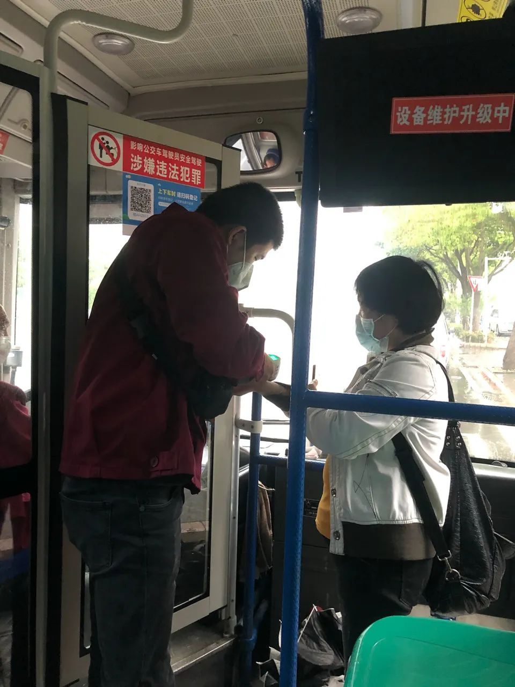
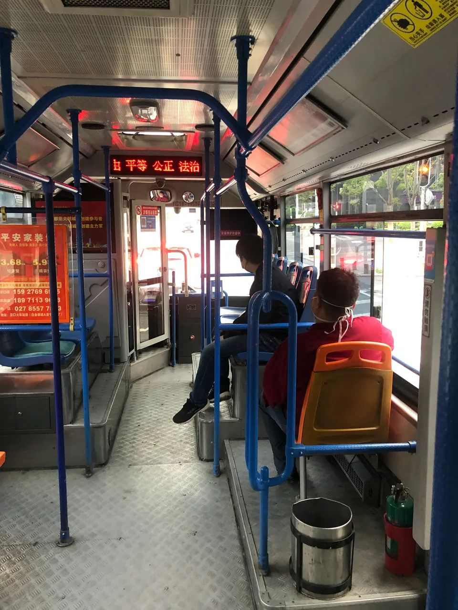

复工第二周，记者走访上海地铁公交出租车，市内公共交通安全吗？
原文链接 备份链接 阻断新型冠状病毒引起的肺炎疫情的传播，公共交通工具的消毒防疫尤为重要。 记者 | 刘朝晖 今天，是春节后上海复工的第二周工作日的开始。从2月10日复工开始，已经有很多人重返工作岗位，同时返沪的人也越来越多，上海市内公共 …

公共交通是城市的毛细血管
这条血管通了城市才会有活力

早上5点多，武汉市民朱国强从微信看到117条公交线路恢复的消息。今天他要参加一个会议，天气预报说有雨，正愁如何出行，这条消息无疑是雪中送炭。
一上午，朱国强转了三趟公交车，还经过武昌火车站，虽然每趟车上的人都不多，连他在内只有两三名乘客，但随车管理员依然很认真，每位乘客上车都要遵守严格的程序：扫码、测温，符合条件才能上车。

图片拍摄：贺斌
尽管目前开通的线路只有平日运力的三分之一不到，但对于此前只能通过共享单车出行的朱国强来说，已是可喜的进展，他所在的企业已经复工，公交的恢复让员工的出行更加便捷。“公共交通是城市的毛细血管，这条血管通了，城市才会有活力。”他对《中国新闻周刊》说。
就在两天前，武汉的各条城市道路上，已经陆续有公交车的身影，驾驶员身穿防护服，车内坐有两三名身穿蓝色服装的工作人员，地铁、公交也陆续开始消杀工作，但具体何时恢复运营，迟迟没有消息。
3月24日，湖北省新型冠状病毒感染肺炎疫情防控指挥部发布通告，就解除离鄂通道管控和武汉市复工复产作出安排，提出“外省来鄂来汉人员凭外省健康码或湖北健康码‘绿码’，在全省范围内安全有序流动”。
然而，如何解决外省来鄂来汉人员及复工复产人员市内交通出行，对接武汉三大火车站？据武汉市人民政府新闻办公室的官方公众号“武汉发布”消息，“经请示行业主管部门，自3月25日起，武汉恢复117条公交线路运营。3月28日起，恢复轨道交通1号线、2号线、3号线、4号线、6号线、7号线运行”。恢复运行的公交、地铁线路的开收班及运营时间，仍按车站公示时间实施。
据了解，武汉此次恢复的117条公交线路中，包括汉口、武昌、武汉等三大火车站始发的42条公交线路，中心城区（含武汉东湖新技术开发区、武汉经济技术开发区）75条区域公交线路，投放的公交运力为全网运力的30%。

图片拍摄：贺斌
从目前开通的线路来看，主要是城市主干道和重点线路，就在《中国新闻周刊》记者所住酒店附近，只有1.6公里外的公交车站有两趟线路开通，其余车站也陆续有公交车停靠，主要是试运营，暂未对乘客开放。
为做好防疫安全工作，武汉建立了实名制、可溯源的乘车机制，乘客一律凭健康码并佩戴口罩乘车，公交实行“一车一码、上下车扫码、一车一管理员”，轨道交通实行“一站一码、一车厢一码”。据“武汉发布”介绍，实名登记扫码乘车主要是为了加强源头管理，持健康码“绿码”或社区动态健康监测证明的方可乘车，以保障同行人员安全，同时对同乘追溯，后期一旦有人确诊（疑似），便可通过系统追溯。
“尽管部分公共交通恢复，我们不提倡65岁以上老年人公共交通出行，是出于安全健康考虑。”“武汉发布”特别说明，此次部分恢复的公共交通主要是满足返鄂返汉、复工复产人群出行需求，同时，老年人是高风险易感人群，为了老年人自身的健康和其他乘客安全，所以倡导65岁以上老年人暂不乘坐公共交通出行。65岁以上老年人或患病市民等群体如有特殊出行需求的，可向社区申请优先安排应急车辆，目前全市有6000台出租车为社区居民买药、送医等提供应急出行服务。
上午10:51，记者坐上了817路公交车，管理员下车，监督指引记者在车门处扫码，然后测体温，武汉大部分公交实行一票制，在车门自动投币机上有个扫码器，刷支付宝或微信付款码即可支付，记者从扫码测温到上车，全程不超过一分钟，车内有两处二维码张贴处，一处在驾驶室上方，一处在后车门，下车时再次扫码，便能完成整个出行信息登记。
《中国新闻周刊》看到，驾驶室处于半封闭状态，驾驶员穿着红色制服，戴着口罩，并没有像试运营那样穿防护服。为了不干扰正常驾驶，《中国新闻周刊》向管理员了解恢复运营的情况，据随车管理员周先生介绍，几天前，公交公司组织司乘人员开展培训，包括上车的程序，防疫安全等，同时开展消杀工作。
尽管很多市民因为小区暂未解禁还不能出门，但公交公司依然配备了足够的车，保障车行效率，仅817线路，公司就配备了12部车，大约20分钟一台车。
周先生介绍，今天早上5点多，第一台车就开始运营，目前他这一班车是他今天的第一趟出车，从他观察的情况来看，乘客并不多，最多五六个人。817路途径洪山广场，是湖北省政府所在地，也是武昌区较为繁华路段，疫情爆发之前，几乎都是满员状态。
按照武汉市的部署，后期将根据客流情况对运力进行动态调整。
值班编辑：俞杨
推荐阅读
▼


原文链接 备份链接 阻断新型冠状病毒引起的肺炎疫情的传播，公共交通工具的消毒防疫尤为重要。 记者 | 刘朝晖 今天，是春节后上海复工的第二周工作日的开始。从2月10日复工开始，已经有很多人重返工作岗位，同时返沪的人也越来越多，上海市内公共 …
原文链接 备份链接 湖北 · 防疫生活口述故事系列（六）| 解封篇 娱志号外特别报道组出品 作者｜Moe、苏博 编辑｜若芋 “4月8日零时起，武汉市解除离汉离鄂通道管控措施。” —— …
原文链接 备份链接 【财新网】（记者 丁捷）2月17日晚上10点，30岁的志愿者司机喻巅在接送完最后一名护士后，匆匆回到家。截至今天，是喻巅连续跑车的第25天。1月23日10时起，武汉“封城”，市公交、地铁、轮渡、长途客运暂停运营，机 …
原文链接 备份链接 “你知道我们武汉人的恐慌是什么吗？ 一是，我们不知道自己有没有被传染。 二是，真被传染了，不知道能不能住上院。 三是，真能住上院了，不知道结果会怎么样。 说白了，就是永远不知道等待我们的明天，究竟是什么。” 小宗出生 …
原文链接 备份链接 关注并星标消费新声 不错过泛消费任何最新动态 过去几天里，我目睹了这些武汉人用近乎燃烧自我的方式集结到一起，也和他们一起对抗着朝令夕改的动荡与外部支撑的缺失，而囿于有限的个人力量，我们最终不得不选择向现实妥协。 …